فصل سوم — تبدیلات شدت و پالایش مکانی#
فصل سوم جایی است که پردازش تصویر از «تعریف تصویر و پیکسل» وارد عمل میشود. ایده اصلی ساده است: یا مقدار یک پیکسل را بهتنهایی تغییر میدهیم، یا با نگاهکردن به همسایههای آن تصمیم میگیریم مقدار جدید چه باشد. از همین دو ایده، بخش بزرگی از روشهای کلاسیک بهبود تصویر ساخته میشود: منفیکردن، گاما، لگاریتم، کشش کنتراست، همسانسازی هیستوگرام، میانگینگیری، گاوسی، میانه، لاپلاسین، ماسک ناتیز، تقویت بالاگذر و گرادیان.

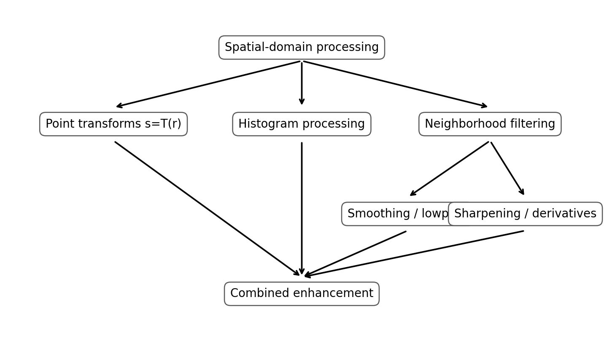
Fig. 18 نقشه مفهومی فصل سوم. شکلها و نمودارهای این فصل برای همین بسته آموزشی از نو تولید شدهاند و بازتولید مستقیم شکلهای کتاب نیستند.#
اهداف یادگیری#
پس از مطالعه این فصل انتظار میرود دانشجو بتواند:
تفاوت پردازش نقطهای و پردازش همسایگی را توضیح دهد؛
رفتار تبدیلهای منفی، لگاریتمی، توانی و چندپاره را از روی منحنی \(s=T(r)\) پیشبینی کند؛
هیستوگرام را بهعنوان توزیع فراوانی شدت تفسیر کند؛
همسانسازی و تطبیق هیستوگرام را از نظر هدف و الگوریتم از هم جدا کند؛
مفهوم پردازش محلی بر پایه میانگین و انحراف معیار همسایگی را توضیح دهد؛
تفاوت correlation و convolution را دقیقاً بیان کند؛
نقش padding، اندازه هسته، جداییپذیری و هسته مرکب را در فیلترگذاری بفهمد؛
فیلترهای box، Gaussian و median را مقایسه کند؛
لاپلاسین، unsharp masking، high-boost، Roberts و Sobel را از نظر اثر و کاربرد مقایسه کند؛
از یک پایینگذر، بالاگذر، میاننگذر و میانگذر بسازد؛
چند روش مکمل را در یک pipeline بهبود تصویر ترکیب کند.
3.1 منطق پردازش در حوزه مکانی#
در حوزه مکانی مستقیماً با پیکسلهای تصویر کار میکنیم. اگر \(f(x,y)\) تصویر ورودی، \(g(x,y)\) تصویر خروجی و \(T\) عملگر پردازش باشد، مدل کلی چنین نوشته میشود:
این رابطه عمداً کلی است. بسته به اینکه \(T\) فقط مقدار همان پیکسل را ببیند یا یک همسایگی کامل را، دو کلاس مهم داریم:
پردازش نقطهای (point processing): فقط \(f(x,y)\) در محاسبه \(g(x,y)\) نقش دارد.
پردازش همسایگی (neighborhood processing): مجموعهای از پیکسلهای اطراف \((x,y)\) وارد محاسبه میشوند.

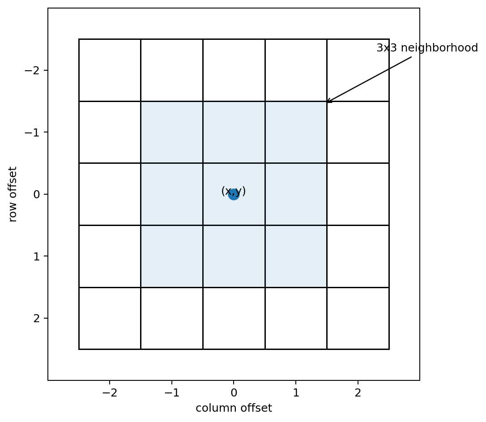
Fig. 19 قرار گرفتن یک همسایگی \(3\times3\) روی پیکسل هدف. مرکز هسته از پیکسل به پیکسل حرکت میکند و در هر مکان یک خروجی میسازد.#
اگر همسایگی به یک پیکسل کاهش یابد، رابطه به فرم بسیار مهم زیر تبدیل میشود:
که در آن \(r\) شدت ورودی و \(s\) شدت خروجی است. این یک تابع یکبعدی است؛ بنابراین میتوان آن را با یک فرمول، جدول lookup یا آرایه 256 عضوی برای تصویر 8 بیتی پیادهسازی کرد.
مثال ذهنی#
فرض کنید پیکسل ورودی 50 باشد. اگر \(T(r)=2r\)، خروجی 100 میشود. هیچ اهمیتی ندارد همسایه چپ یا راست چه مقداری دارند. اما اگر \(T\) «میانگین 9 پیکسل همسایگی» باشد، دیگر مقدار خروجی بدون دیدن اطراف قابل تعیین نیست.
Note
در این فصل واژه «spatial» به این معنا نیست که الگوریتم حتماً هندسی است؛ بلکه یعنی عمل مستقیماً روی صفحه تصویر و مقادیر پیکسلها انجام میشود، نه در حوزه تبدیل مانند فوریه.
3.2 توابع پایه تبدیل شدت#
3.2.1 خانواده نگاشتهای شدت#
منحنی \(s=T(r)\) تقریباً قبل از اجرای الگوریتم به ما میگوید تصویر چه تغییری خواهد کرد. اگر منحنی در یک بازه شیب بزرگی داشته باشد، آن بازه از شدتها کشیده و کنتراستش زیاد میشود. اگر شیب کوچک باشد، همان بازه فشرده میشود.

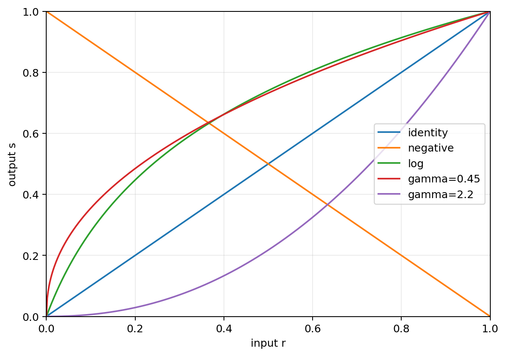
Fig. 20 چند خانواده مهم تبدیل شدت. خط همانی یعنی «بدون تغییر»؛ قرار گرفتن منحنی بالاتر یا پایینتر از آن، بهترتیب روشنتر یا تیرهتر شدن آن محدوده را نشان میدهد.#
3.2.2 تصویر منفی#
برای تصویری با \(L\) سطح شدت:
در تصویر 8 بیتی \(L=256\) است، پس:
این تبدیل ترتیب روشنایی را وارونه میکند. صفر به 255، مقدار 255 به صفر و خاکستری میانی تقریباً به خاکستری میانی دیگر نگاشت میشود.
کجا مفید است؟ وقتی ساختارهای روشن کوچک روی زمینه تاریک قرار دارند، نسخه منفی گاهی برای چشم راحتتر تفسیر میشود. در تصویربرداری پزشکی کلاسیک و نمایش نگاتیو فیلم این ایده شناختهشده است.
الگوریتم: برای هر پیکسل فقط یک تفریق انجام دهید؛ بنابراین هزینه محاسباتی \(O(MN)\) است.
3.2.3 تبدیل لگاریتمی#
فرم متداول:
عدد 1 برای جلوگیری از \(\log(0)\) اضافه میشود. ویژگی کلیدی لگاریتم این است که مقادیر کوچک را بازتر و مقادیر بزرگ را فشردهتر میکند.
کاربرد کلاسیک: نمایش طیف فوریه. دامنه مولفه DC و چند مولفه قوی میتواند آنقدر بزرگ باشد که بقیه جزئیات در نمایش خطی تقریباً سیاه دیده شوند. لگاریتم دامنه دینامیکی را فشرده میکند.
3.2.4 تبدیل توانی یا گاما#
اگر \(r\) را به بازه \([0,1]\) نرمال کنیم:
\(\gamma<1\): نواحی تاریک باز میشوند؛
\(\gamma=1\): نگاشت همانی؛
\(\gamma>1\): نواحی کمنور فشرده و تصویر معمولاً تیرهتر میشود.

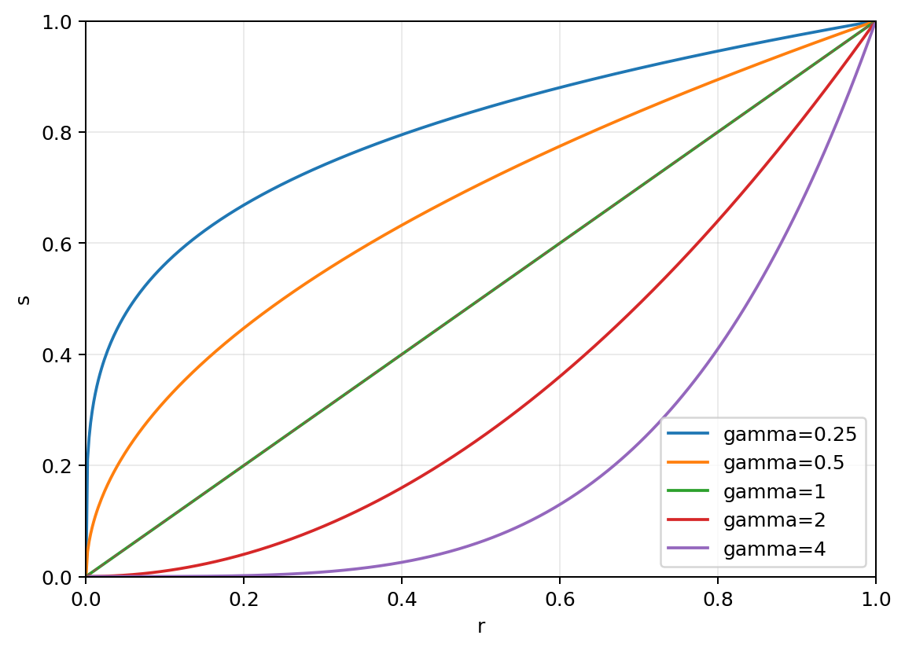
Fig. 21 خانواده منحنیهای گاما. اثر یک مقدار \(\gamma\) به شکل توزیع شدت تصویر نیز وابسته است، بنابراین «بهترین گاما» عدد ثابتی برای همه تصاویر نیست.#
چرا تصحیح گاما وجود دارد؟#
سامانه تصویربرداری/نمایش میتواند پاسخ غیرخطی داشته باشد. اگر نمایشگر تقریباً شدت خروجی را به صورت \(V^\gamma\) تولید کند، پیشجبران با توان معکوس میتواند خروجی دیدهشده را به پاسخ موردنظر نزدیک کند. در کاربرد آموزشی، مهمتر از حفظ اعداد استاندارد این است که گاما یک کنترل غیرخطی بر دامنه شدت است.
مثال عددی#
اگر \(r=0.25\):
با \(\gamma=0.5\): \(s=\sqrt{0.25}=0.5\)، پس روشنتر میشود؛
با \(\gamma=2\): \(s=0.0625\)، پس تیرهتر میشود.
3.3 تبدیلهای چندپاره، آستانه، برش شدت و صفحههای بیت#
3.3.1 کشش کنتراست چندپاره#
در بسیاری از تصاویر نمیخواهیم همه شدتها با یک قانون واحد تغییر کنند. تابع چندپاره اجازه میدهد بازهای را تقویت و بازهای دیگر را فشرده کنیم.

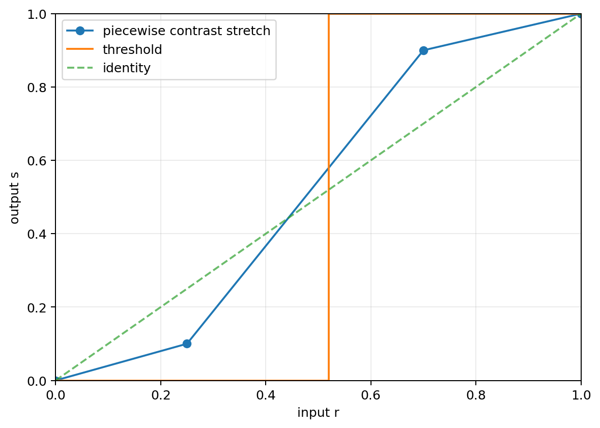
Fig. 22 نمونهای از کشش کنتراست چندپاره و آستانهگذاری. آستانهگذاری حالت حدی یک نگاشت چندپاره است که خروجی را به دو سطح میبرد.#
اگر نقاط شکست \((r_1,s_1)\) و \((r_2,s_2)\) باشند، سه قطعه خطی داریم. در پیادهسازی کافی است بررسی کنیم \(r\) در کدام بازه است و معادله خط همان قطعه را اجرا کنیم.
3.3.2 آستانهگذاری#
یک فرم ساده:
این تبدیل یک تصویر خاکستری را به تصویر دودویی تبدیل میکند. در فصلهای بعد، آستانهگذاری برای segmentation نقش جدیتری پیدا میکند.
3.3.3 intensity slicing#
گاهی فقط یک بازه شدت مهم است. مثلاً میخواهیم پیکسلهای بین 120 و 150 برجسته شوند. دو شیوه رایج:
مقادیر داخل بازه روشن، بقیه تاریک؛
مقادیر داخل بازه روشن، بقیه بدون تغییر.
کاربردها: برجستهکردن ساختارهایی با محدوده شدت مشخص، تحلیل تصاویر پزشکی، رادار و نقشههای ارتفاعی.
3.3.4 صفحههای بیت#
یک پیکسل 8 بیتی را میتوان نوشت:
هر \(b_j\) یک صفحه بیت است. بیتهای پرارزش شکل کلی و بیتهای کمارزش جزئیات ریزتر و گاهی نویز را حمل میکنند.

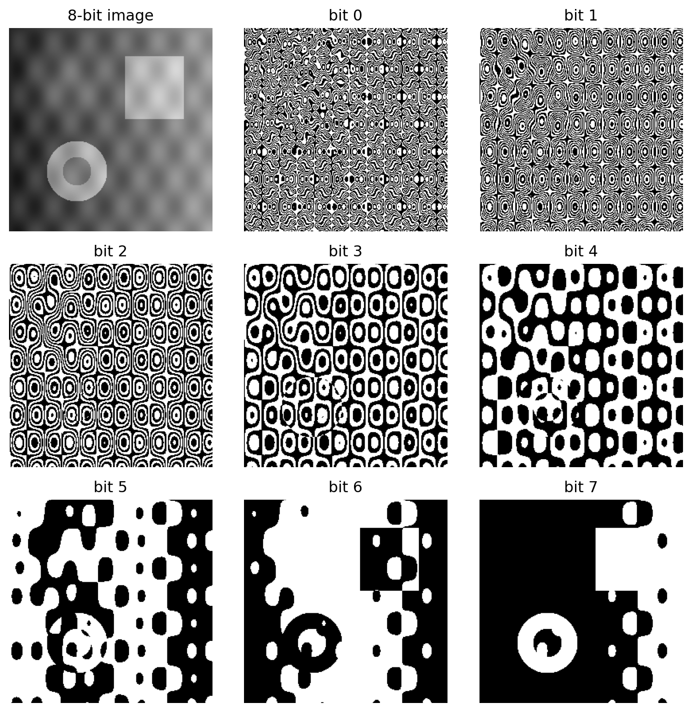
Fig. 23 تجزیه یک تصویر 8 بیتی مصنوعی به صفحههای بیت. هرچه به بیتهای پرارزش نزدیک میشویم، ساختار اصلی تصویر واضحتر میشود.#
کاربرد: تحلیل فشردهسازی، watermarking، تشخیص اینکه چه مقدار از ساختار تصویر با چند بیت اصلی قابل بازسازی است.
3.4 پردازش هیستوگرام#
3.4.1 هیستوگرام چیست؟#
اگر \(r_k\) شدت \(k\)ام و \(n_k\) تعداد پیکسلهای دارای این شدت باشد:
و هیستوگرام نرمالشده:
از آنجا که مجموع همه احتمالها 1 است، \(p_r\) را میتوان تقریب گسسته توزیع شدت دانست.

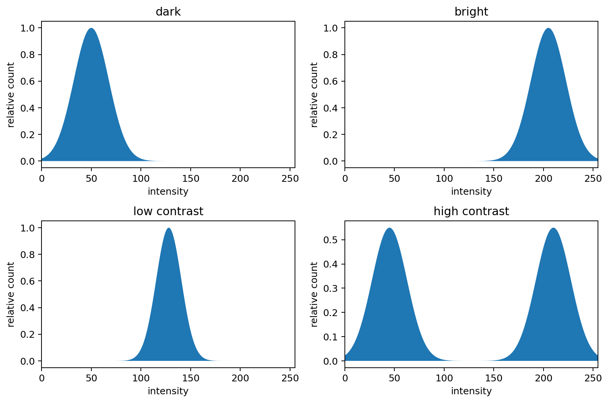
Fig. 24 چهار الگوی مفهومی هیستوگرام: تیره، روشن، کمکنتراست و پرکنتراست. محل جرم هیستوگرام بیشتر با روشنایی و پهنای آن بیشتر با کنتراست مرتبط است.#
از شکل هیستوگرام چه میفهمیم؟#
جرم نزدیک صفر: تصویر عمدتاً تیره؛
جرم نزدیک \(L-1\): تصویر عمدتاً روشن؛
جرم باریک: دامنه دینامیکی محدود و معمولاً کنتراست کم؛
توزیع گسترده: استفاده بیشتر از بازه شدت و معمولاً کنتراست بیشتر.
اما هیستوگرام اطلاعات مکانی ندارد. دو تصویر با آرایش کاملاً متفاوت پیکسلها میتوانند هیستوگرام یکسان داشته باشند.
3.4.2 همسانسازی هیستوگرام — ایده پیوسته#
برای متغیر شدت پیوسته، نگاشت تجمعی:
مشتق آن:
و با قانون تغییر متغیر:
پس در مدل پیوسته، خروجی به توزیع یکنواخت میرسد.
3.4.3 نسخه دیجیتال#
برای تصویر واقعی از جمع تجمعی استفاده میکنیم:
و سپس به نزدیکترین سطح مجاز گرد میکنیم.

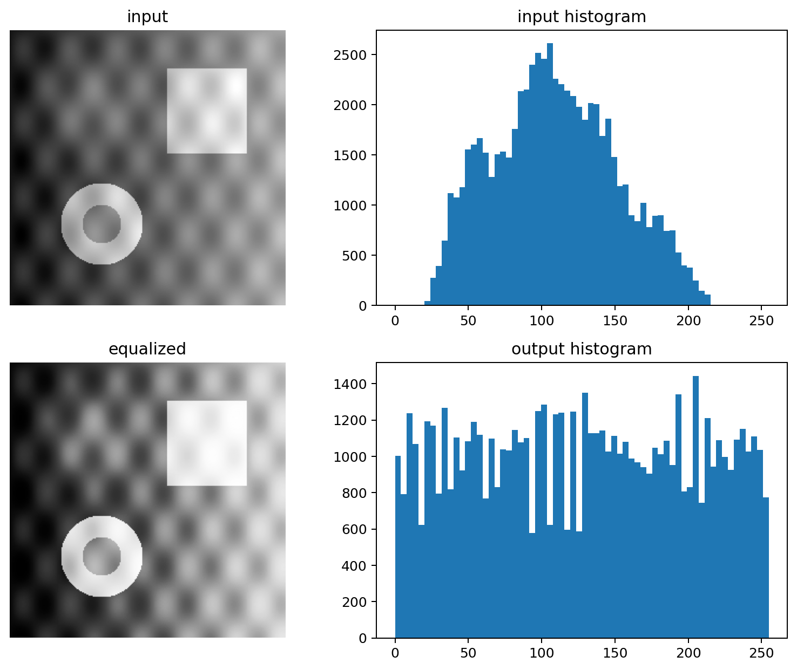
Fig. 25 یک نمونه مصنوعی از همسانسازی هیستوگرام. در حالت گسسته، خروجی الزاماً هیستوگرام کاملاً تخت ندارد، چون چند شدت ورودی ممکن است به یک شدت خروجی نگاشت شوند.#
الگوریتم همسانسازی#
شمارش فراوانی هر سطح شدت؛
تقسیم بر تعداد کل پیکسلها برای PMF؛
محاسبه CDF؛
ضرب CDF در \(L-1\)؛
گردکردن؛
جایگزینی هر شدت ورودی با مقدار نگاشتشده.
پیچیدگی زمانی خطی نسبت به تعداد پیکسلهاست.
Warning
همسانسازی همیشه «بهبود» نمیدهد. اگر تصویر ذاتاً هیستوگرام مناسبی دارد، یا یک ناحیه کوچک بسیار روشن/تیره غالب باشد، نتیجه ممکن است بیش از حد خشن یا غیرطبیعی شود.
3.4.4 تطبیق یا specification هیستوگرام#
در همسانسازی، هدف تقریباً یکنواخت است. در histogram matching یا specification، توزیع هدف را خودمان تعیین میکنیم.
برای ورودی:
برای خروجی مطلوب:
پس:

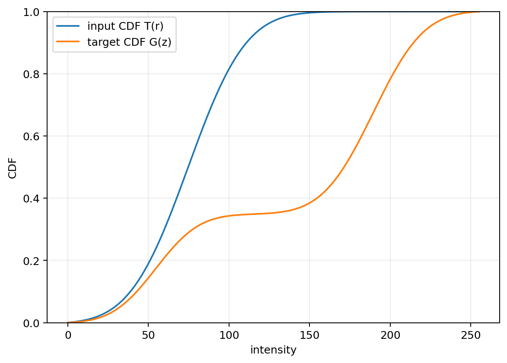
Fig. 26 نگاه CDF به تطبیق هیستوگرام: شدت ورودی ابتدا به فضای تجمعی مشترک میرود و سپس از CDF هدف به شدت خروجی نگاشت میشود.#
کاربرد: یکسانسازی ظاهر تصاویر گرفتهشده در زمانهای مختلف، نزدیککردن تصاویر چند دوربین، preprocessing برای مقایسه، و کنترل ظاهر خروجی.
3.5 پردازش محلی هیستوگرام و آمار همسایگی#
همسانسازی سراسری یک نگاشت برای کل تصویر میسازد. اگر مشکل فقط در ناحیهای کوچک باشد، روش سراسری ممکن است آن را نبیند. راهحل، محاسبه آمار روی پنجرهای متحرک است.
اگر همسایگی \(S_{xy}\) شامل پیکسلهای \(r_i\) باشد، میانگین محلی:
و واریانس محلی:

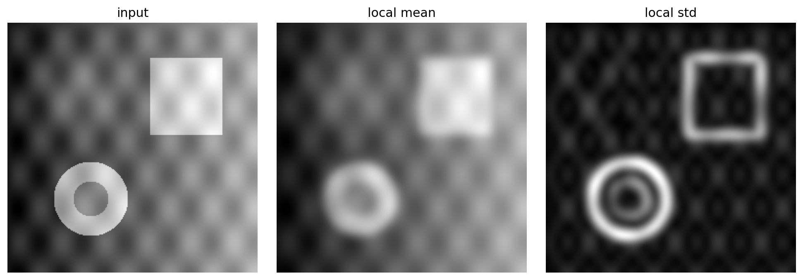
Fig. 27 تصویر مصنوعی، میانگین محلی و انحراف معیار محلی. میانگین ساختار کمفرکانس را نشان میدهد و انحراف معیار به تغییرات، بافت و مرزها حساستر است.#
یک قانون محلی نمونه#
میتوان پیکسل را فقط وقتی تقویت کرد که میانگین محلی از میانگین کل کمتر و انحراف معیار محلی در محدودهای مطلوب باشد. این ایده در روشنکردن جزئیات تاریک محلی بدون دستکاری شدید همه تصویر مفید است.
نکته محاسباتی#
اگر برای هر پیکسل از صفر مجموع پنجره را محاسبه کنیم، هزینه زیاد است. در عمل میتوان از convolution، integral image یا الگوریتمهای sliding-window استفاده کرد.
3.6 اصول پالایش مکانی#
3.6.1 جمع حاصلضرب#
برای یک هسته \(w(s,t)\) با اندازه \(m\times n\)، خروجی خطی در مکان \((x,y)\) از جمع وزندار همسایگی ساخته میشود:
در correlation هسته همانطور که نوشته شده روی تصویر حرکت میکند. در convolution هسته در دو محور برگردانده میشود:
یا بهطور معادل میتوان گفت correlation را با هسته چرخیده \(180^\circ\) انجام میدهیم.

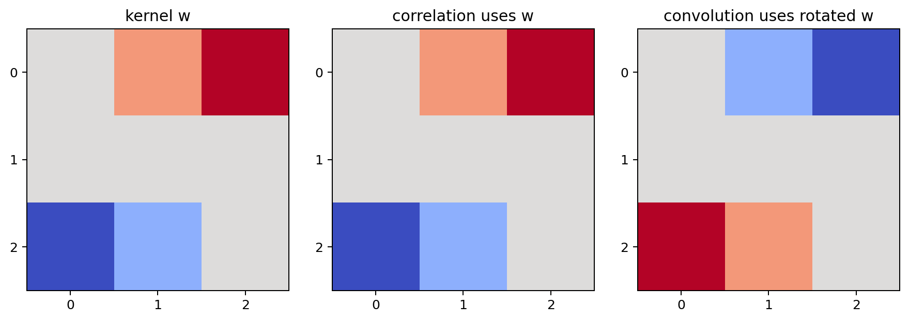
Fig. 28 تفاوت مفهومی correlation و convolution: در convolution هسته پیش از اعمال، 180 درجه میچرخد. برای هستههای متقارن این تفاوت دیده نمیشود.#
مثال کوچک#
فرض کنید هسته:
هسته convolution آن:
اگر هسته گاوسی متقارن باشد، \(w=\tilde w\) و correlation/convolution خروجی یکسانی میدهند.
3.6.2 لبههای تصویر و padding#
وقتی مرکز هسته نزدیک مرز تصویر است، بخشی از هسته بیرون تصویر میافتد. چند راه:
zero padding؛
replicate؛
reflect/symmetric؛
circular/wrap؛
فقط محاسبه ناحیه valid.

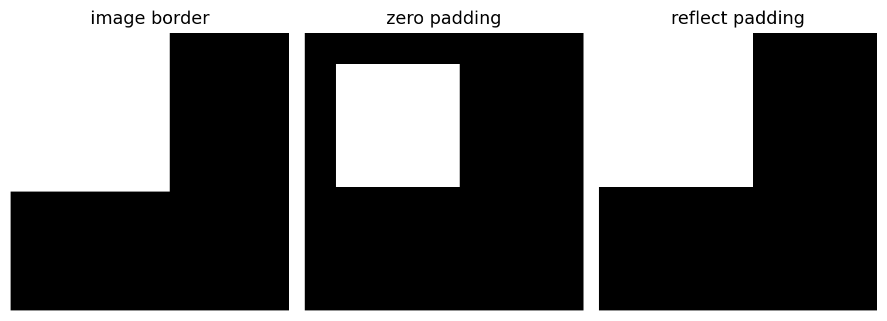
Fig. 29 دو نمونه padding. انتخاب نحوه توسعه مرز میتواند روی پیکسلهای نزدیک لبه اثر قابلمشاهده داشته باشد.#
قاعده عملی: برای تصاویر طبیعی، reflect اغلب مرز مصنوعی کمتری از zero padding ایجاد میکند؛ اما انتخاب درست به مدل مسئله بستگی دارد.
3.6.3 هسته مرکب#
اگر دو فیلتر خطی پشت سر هم اجرا شوند، میتوان در بسیاری از موارد ابتدا خود هستهها را convolution کرد و یک هسته مرکب ساخت:
این اصل به کاهش محاسبات و تحلیل پاسخ کل زنجیره کمک میکند.
3.6.4 جداییپذیری#
اگر هسته دوبعدی را بتوان نوشت:
میتوان بهجای یک convolution دوبعدی، یک convolution افقی و یک convolution عمودی انجام داد.
برای تصویر \(M\times N\) و هسته \(m\times n\):
مستقیم: تقریباً \(MNmn\) ضرب/جمع؛
جداییپذیر: تقریباً \(MN(m+n)\).

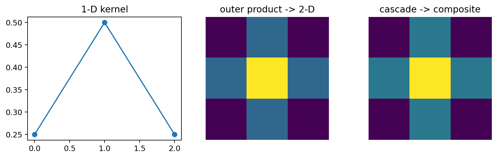
Fig. 30 دو ایده مهم: ساخت هسته دوبعدی از ضرب خارجی دو هسته یکبعدی، و تبدیل چند مرحله خطی به یک هسته مرکب.#
3.7 پالایههای هموارساز#
هدف هموارسازی کاهش تغییرات سریع، نویز و جزئیات ریز است. از دید فرکانسی، بیشتر این فیلترها پایینگذر هستند.
3.7.1 میانگین جعبهای#
برای یک هسته \(m\times n\):
و خروجی میانگین همسایگی است.
مزیت: بسیار ساده و سریع.
عیب: لبهها را بهطور قابلتوجهی تار میکند و پاسخ فرکانسی آن نرم و کنترلشده نیست.
3.7.2 فیلتر گاوسی#
تابع دوبعدی گاوسی:
برای ساخت هسته دیجیتال، آن را روی شبکه نمونهبرداری و سپس مجموع ضرایب را به 1 نرمال میکنیم.
گاوسی جداییپذیر است:

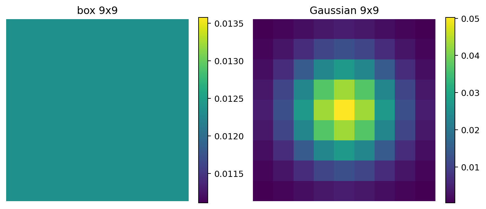
Fig. 31 مقایسه هسته box و Gaussian. در گاوسی، پیکسلهای نزدیک مرکز وزن بیشتری دارند و تغییر وزن نرم است.#
نقش \(\sigma\)#
\(\sigma\) کوچک: هموارسازی محدود؛
\(\sigma\) بزرگ: حذف بیشتر جزئیات و تاری بیشتر.
اندازه هسته باید آنقدر باشد که بخش اصلی جرم گاوسی را بپوشاند. یک قاعده رایج آموزشی حدود \(6\sigma+1\) است، ولی در عمل میتوان با توجه به دقت و هزینه آن را محدود کرد.
3.7.3 فیلتر میانه#
میانه یک فیلتر غیرخطی است. مقادیر همسایگی را مرتب میکنیم و مقدار وسط را جایگزین مرکز میکنیم.
برای مجموعه:
میانگین بهشدت توسط 250 و 255 کشیده میشود، اما میانه 13 است. به همین دلیل median برای نویز ضربهای بسیار موثر است.

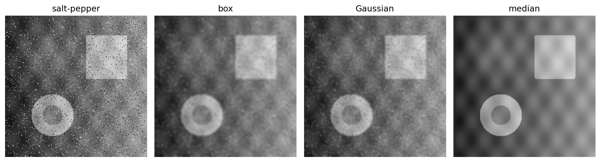
Fig. 32 مقایسه box، Gaussian و median روی یک تصویر با نویز نمکوفلفل یکسان. median معمولاً نویز ضربهای را با حفظ بهتر مرزها حذف میکند.#
مقایسه سریع#
فیلتر |
خطی؟ |
بهترین کاربرد آموزشی |
ضعف مهم |
|---|---|---|---|
Box |
بله |
هموارسازی ساده و درک averaging |
تاری زیاد، پاسخ فرکانسی ضعیف |
Gaussian |
بله |
حذف نویز نرم، preprocessing |
لبهها را نیز نرم میکند |
Median |
خیر |
نویز ضربهای |
هزینه بیشتر و امکان حذف جزئیات کوچک |
3.8 تیزسازی با مشتقها#
هموارسازی تغییرات سریع را کم میکند؛ تیزسازی برعکس، تغییرات سریع را برجسته میکند. مشتقها ابزار طبیعی این کار هستند.
3.8.1 مشتق گسسته مرتبه اول#
در یک بعد:
3.8.2 مشتق مرتبه دوم#

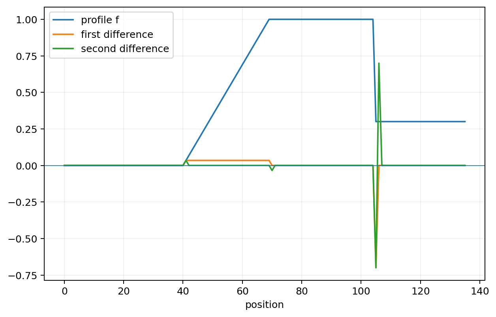
Fig. 33 رفتار مفهومی تفاضل مرتبه اول و دوم روی پروفایل شدت. مشتق دوم به تغییرات سریع حساستر است و در دو طرف گذار علامت عوض میکند.#
مشتق اول در رمپ غیرصفر باقی میماند؛ مشتق دوم در داخل رمپ تقریباً صفر است و در آغاز و پایان رمپ پاسخ قویتری میدهد. همین تفاوت در edge detection و sharpening مهم است.
3.9 لاپلاسین#
در دو بعد:
تقریب چهارهمسایه:
یک هسته متناظر:
نسخه 8 همسایه:

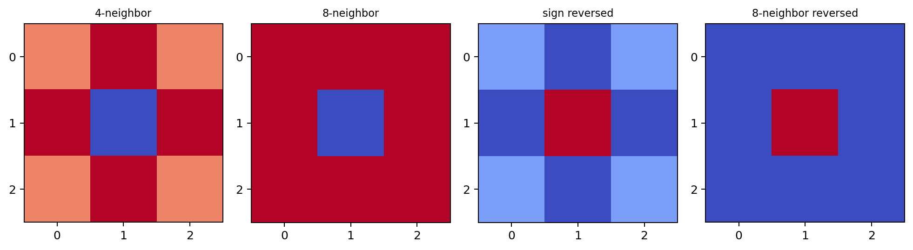
Fig. 34 چهار شکل رایج از هسته لاپلاسین. تغییر علامت همه ضرایب، پاسخ مشتق را معکوس میکند و در فرمول ترکیب با تصویر باید به این علامت توجه کرد.#
تیزسازی با لاپلاسین#
اگر هسته دارای مرکز منفی باشد، یکی از فرمهای متداول:
اگر علامت هسته برعکس باشد:
اصل مهم این است که مولفه مشتقی را با علامت مناسب به تصویر اصلی اضافه کنیم.
چرا لاپلاسین نویز را تقویت میکند؟#
نویز تغییرات سریع پیکسلی دارد. مشتق مرتبه دوم نیز به تغییرات سریع حساس است؛ بنابراین بدون کنترل، هم جزئیات مفید و هم نویز تقویت میشوند.
3.10 ماسک ناتیز و تقویت بالاگذر#
3.10.1 ایده unsharp masking#
ابتدا نسخه هموارشده \(\bar f\) را بسازید. سپس ماسک جزئیات:
و نتیجه:
\(k=1\): unsharp masking؛
\(k>1\): high-boost filtering.

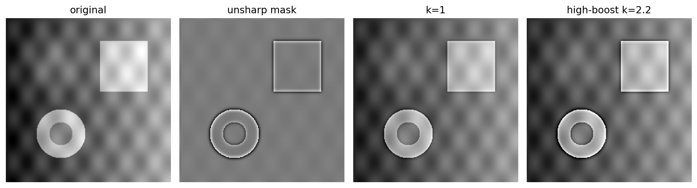
Fig. 35 ماسک ناتیز و high-boost روی تصویر مصنوعی. افزایش \(k\) جزئیات را قویتر میکند، اما هاله و تقویت نویز نیز بیشتر میشود.#
چرا نام «unsharp»؟#
در روش تاریخی عکاسی، یک نسخه محو از تصویر برای ساخت ماسک استفاده میشد. خود ماسک «غیرتیز» است، ولی نتیجه نهایی تیزتر میشود.
الگوریتم#
\(\bar f \leftarrow\) GaussianBlur\((f)\)
\(m\leftarrow f-\bar f\)
\(g\leftarrow f+k m\)
clip به بازه مجاز شدت
3.11 گرادیان: Roberts و Sobel#
گرادیان بردار مشتقهای مرتبه اول است:
اندازه دقیق:
و تقریب سریع:
Roberts#
یک زوج ساده هستههای \(2\times2\):
Sobel#
یک فرم متداول:
ضریب 2 به ردیف یا ستون مرکزی وزن بیشتری میدهد و اندکی smoothing در دل محاسبه مشتق ایجاد میکند.

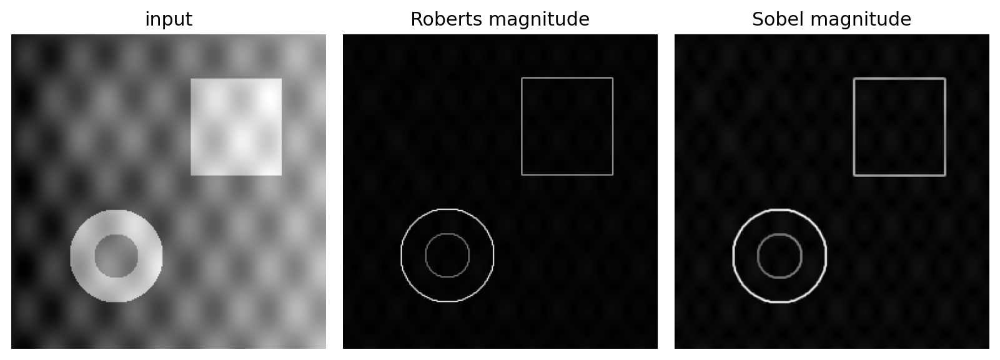
Fig. 36 خروجی Roberts و Sobel روی یک ورودی مشترک. هر دو تغییرات شدت را برجسته میکنند، اما Sobel به دلیل پشتیبانی بزرگتر و وزندهی، رفتار پایدارتر و نرمتری دارد.#
کاربرد نزدیک به صنعت#
در بازرسی سطح، مرز ترک، خراش، لبه قطعه یا نقص موضعی اغلب از زمینه آرام متمایز است. گرادیان میتواند پسزمینه یکنواخت را سرکوب و ناپیوستگیها را برجسته کند. در pipeline واقعی معمولاً پس از گرادیان، threshold و عملیات مورفولوژیک نیز استفاده میشود.
3.12 رابطه پایینگذر، بالاگذر، میاننگذر و میانگذر#
اگر \(lp(x,y)\) هسته پایینگذر و \(\delta(x,y)\) ضربه واحد باشد:
بالاگذر#
چرا؟ چون \(\delta*f=f\) و \(lp*f\) نسخه کمفرکانس تصویر است؛ تفریق آن از تصویر، مولفههای سریعتر را باقی میگذارد.
میاننگذر#
با دو پایینگذر با پهنای متفاوت:
میانگذر#
صفحه ناحیهای (zone plate)#
برای آزمایش یک فیلتر، تصویر zone plate بسیار مفید است:
یا نسخه مقیاسشده آن. فرکانس مکانی با فاصله از مرکز تغییر میکند، پس یک تصویر واحد طیفی از فرکانسهای مختلف را نشان میدهد.

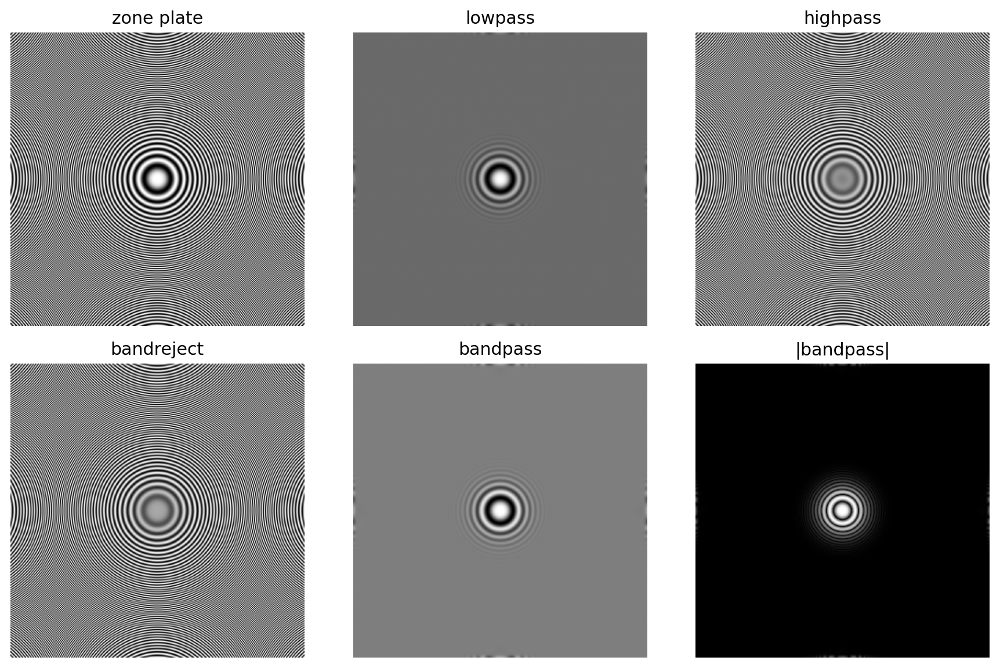
Fig. 37 zone plate و پاسخ خانواده فیلترهای مشتقشده از پایینگذر. محل حلقههای عبوری یا سرکوبشده، نقش فرکانسی فیلتر را بهصورت دیداری آشکار میکند.#
نکته مهم درباره جداییپذیری و جهتداری#
یک فیلتر جداییپذیر لزوماً isotropic نیست. اگر پاسخ دوبعدی از حاصلضرب دو پاسخ یکبعدی ساخته شود، ممکن است ساختار چهارگوش یا جهتدار نشان دهد. برای کاربردی که جهت نباید مهم باشد، باید isotropy پاسخ بررسی شود.
3.13 ترکیب روشهای بهبود مکانی#
در مسئله واقعی یک روش واحد معمولاً کافی نیست. مثال آموزنده این فصل ترکیبی از این ایدههاست:
لاپلاسین برای برجستهکردن جزئیات ریز؛
گرادیان Sobel برای پیدا کردن گذارهای قوی؛
هموارسازی گرادیان برای ساخت ماسک پیوستهتر؛
ضرب ماسک در پاسخ لاپلاسین برای کنترل تقویت در نواحی صاف؛
افزودن نتیجه به تصویر اصلی؛
تبدیل گاما برای تنظیم نمایش نهایی.

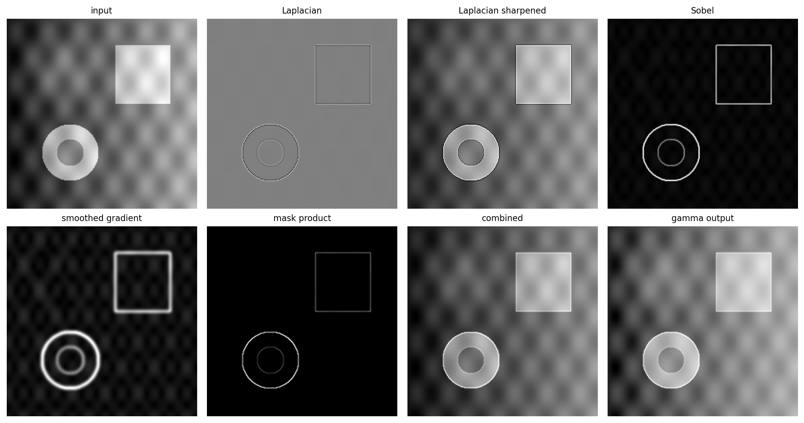
Fig. 38 یک pipeline آموزشی مستقل: ورودی، لاپلاسین، تیزسازی، Sobel، گرادیان هموارشده، ماسک حاصلضرب، ترکیب و تنظیم گاما.#
چرا این ترکیب منطقی است؟#
لاپلاسین جزئیات ظریف را خوب میبیند، اما به نویز حساس است. گرادیان نسبت به لبههای قوی پاسخ قابلاعتمادتری دارد. اگر گرادیان هموارشده بهعنوان ماسک استفاده شود، تقویت لاپلاسین بیشتر جایی اعمال میشود که ساختار واقعی وجود دارد و در نواحی صاف کمتر میشود.
شبهکد#
L = Laplacian(f)
S = f - L
G = SobelMagnitude(f)
Gs = GaussianBlur(G)
M = Gs * abs(L)
C = f + alpha * M
out = Gamma(C, gamma)
پارامترهای \(\alpha\) و \(\gamma\) باید بر اساس دامنه شدت، نویز و هدف نمایش انتخاب شوند.
3.14 مثالهای اجرایی پیشنهادی#
فایلهای آماده در پوشه downloads/ قرار دارند. این فایلها برای اجرای مستقل طراحی شدهاند و به تنظیمات Jupyter Book وابسته نیستند.
آزمایش 1 — تبدیلهای شدت#
روی یک تصویر مصنوعی ثابت، negative، log، gamma و threshold را اجرا کنید. سپس به این سه سؤال پاسخ دهید:
کدام روش جزئیات تاریک را بهتر آشکار کرد؟
کدام روش دامنه روشن را فشرده کرد؟
کدام روش اطلاعات خاکستری را بهطور برگشتناپذیر حذف کرد؟
آزمایش 2 — همسانسازی هیستوگرام#
هیستوگرام قبل و بعد را رسم کنید. بررسی کنید آیا خروجی واقعاً کاملاً یکنواخت است. دلیل عدم یکنواختی کامل در داده گسسته چیست؟
آزمایش 3 — correlation در برابر convolution#
یک هسته نامتقارن انتخاب کنید. خروجی دو عملیات را مقایسه کنید. سپس همان آزمایش را با هسته گاوسی متقارن انجام دهید.
آزمایش 4 — فیلترهای هموارساز#
یک realization یکسان از نویز salt-and-pepper را با box، Gaussian و median پردازش کنید. اگر برای هر روش نویز متفاوت بسازید، مقایسه منصفانه نخواهد بود.
آزمایش 5 — تیزسازی#
Laplacian، unsharp، high-boost و Sobel را روی یک تصویر مشترک اجرا کنید. تفاوت «افزایش جزئیات» و «نمایش لبه» را از هم جدا کنید.
آزمایش 6 — zone plate#
اثر lowpass، highpass، bandreject و bandpass را روی zone plate بررسی کنید. بهجای حفظکردن تعریفها، از محل حلقههای باقیمانده نتیجه بگیرید کدام فرکانسها عبور کردهاند.
3.15 نکات مفهومی که معمولاً اشتباه میشوند#
«روشنتر» با «کنتراست بیشتر» یکی نیست#
اضافهکردن یک مقدار ثابت میتواند تصویر را روشنتر کند بدون آنکه اختلاف بین شدتها افزایش یابد. کنتراست بیشتر یعنی فاصله مؤثر بین سطوح موردنظر بیشتر شود.
histogram equalization همیشه بهترین گزینه نیست#
این روش هدف خاصی دارد: استفاده گستردهتر از دامنه شدت بر اساس CDF. اگر هدف حفظ ظاهر طبیعی یا تطبیق با یک مرجع باشد، روش دیگری ممکن است مناسبتر باشد.
convolution و correlation فقط وقتی یکساناند که هسته متقارن باشد#
در بسیاری از مثالهای smoothing تفاوت دیده نمیشود، چون box و Gaussian متقارناند. این نباید باعث شود تعریف اصلی فراموش شود.
median یک convolution نیست#
هیچ مجموعه ثابت از ضرایب خطی وجود ندارد که median را برای همه ورودیها بسازد. مرتبسازی و انتخاب مقدار میانی یک عملیات غیرخطی است.
مشتق «اطلاعات جدید» ایجاد نمیکند#
مشتق فقط تغییرات موجود را برجسته میکند. اگر جزئیاتی زیر نویز یا کوانتیزهسازی از بین رفته باشد، sharpening الزاماً آن را بازیابی نمیکند و حتی ممکن است نویز را شدیدتر کند.
تیزسازی با edge detection یکسان نیست#
در edge detection معمولاً خروجی مشتق یا magnitude خودش اهمیت دارد. در sharpening پاسخ مشتق به تصویر اصلی بازگردانده میشود تا ظاهر تیزتر شود.
3.16 یک نگاه الگوریتمی به انتخاب روش#
اگر مسئله شما این است که:
تصویر کلی خیلی تیره است: gamma با \(\gamma<1\) یا کشش کنتراست؛
دامنه دینامیکی خیلی بزرگ است: log؛
فقط یک بازه شدت مهم است: intensity slicing؛
کنتراست سراسری ضعیف است: histogram equalization؛
ظاهر باید شبیه مرجع شود: histogram matching؛
نویز نرم/گاوسی دارید: Gaussian smoothing؛
نویز نمکوفلفل دارید: median؛
لبهها باید برجسته شوند: Sobel/gradient؛
جزئیات ریز باید تقویت شوند: Laplacian یا unsharp/high-boost؛
یک روش کافی نیست: pipeline ترکیبی.
این جدول «نسخه قطعی» نیست؛ فقط نقطه شروع مهندسی است. در عمل نوع نویز، دامنه شدت، هدف نهایی و حساسیت کاربرد تعیینکنندهاند.
3.17 تمرینهای کوتاه#
برای تصویر 8 بیتی، خروجی negative پیکسلهای 0، 64، 128، 200 و 255 را حساب کنید.
برای \(r=0.16\)، خروجی \(r^{0.5}\) و \(r^2\) را محاسبه و تفسیر کنید.
چرا histogram یک تصویر نمیتواند محل مکانی اشیا را تعیین کند؟
چه زمانی histogram matching از equalization منطقیتر است؟
با یک مثال هسته نامتقارن توضیح دهید correlation و convolution چرا متفاوتاند.
چرا Gaussian separable است و این موضوع چه سود محاسباتی دارد؟
چرا median در برابر salt-and-pepper از mean بهتر عمل میکند؟
اگر ضرایب یک هسته مشتق جمعشان صفر باشد، پاسخ آن روی ناحیه ثابت چه خواهد بود؟
افزایش \(k\) در high-boost چه مزیت و چه خطری دارد؟
چرا Laplacian نسبت به noise حساستر از gradient است؟
چرا zone plate برای مقایسه فیلترها مفید است؟
در یک کاربرد پزشکی، چرا ممکن است استفاده مستقیم از median برای «کاهش نویز» تصمیم خطرناکی باشد؟
3.18 جمعبندی فصل#
زنجیره منطقی فصل سوم را میتوان در چند جمله خلاصه کرد:
\(s=T(r)\) زبان پردازش تکپیکسلی است؛
histogram توزیع شدتها را بدون اطلاعات مکانی خلاصه میکند؛
equalization با CDF کنتراست سراسری را بازتوزیع میکند و matching به توزیع هدف میرود؛
فیلتر مکانی یک جمع حاصلضرب روی همسایگی است؛
smoothing عمدتاً تغییرات سریع را سرکوب میکند؛
sharpening با مشتق یا کمکردن نسخه هموار، تغییرات سریع را تقویت میکند؛
Gaussian نمونه مهم یک هسته خطی، هموار و جداییپذیر است؛
median غیرخطی و مناسب نویز ضربهای است؛
Laplacian مشتق مرتبه دوم و Sobel تقریب گرادیان مرتبه اول است؛
highpass و band filters را میتوان از lowpassها ساخت؛
در کاربرد واقعی، ترکیب هوشمند چند روش معمولاً بهتر از تکیه بر یک الگوریتم است.
پرسش اصلی برای هر خروجی فقط این نیست که «بهتر شد یا نه؟». بهتر است همیشه سه سؤال بپرسیم: کدام شدتها یا فرکانسها تقویت شدند؟ کدام اطلاعات تضعیف یا حذف شدند؟ چه artifact یا حساسیتی اضافه شد؟ پاسخ به این سه سؤال، فهم واقعی فصل را از حفظکردن نام فیلترها جدا میکند.
فایلهای همراه#
منبع علمی اصلی#
Rafael C. Gonzalez and Richard E. Woods, Digital Image Processing, 4th Edition, Chapter 3: Intensity Transformations and Spatial Filtering.
این متن آموزشی بر مبنای سازمان علمی فصل سوم و فایل فارسی تهیهشده برای همین درس تنظیم شده است. شکلهای این بسته مستقل و بازطراحیشدهاند و صفحات یا تصاویر کتاب در ZIP بازنشر نشدهاند.